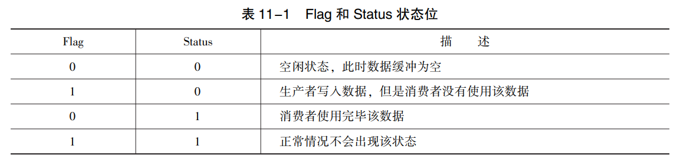
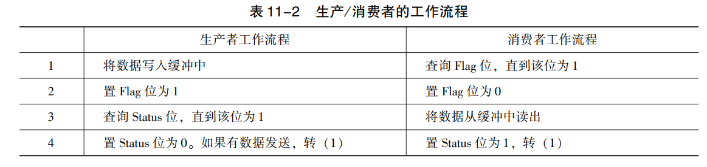
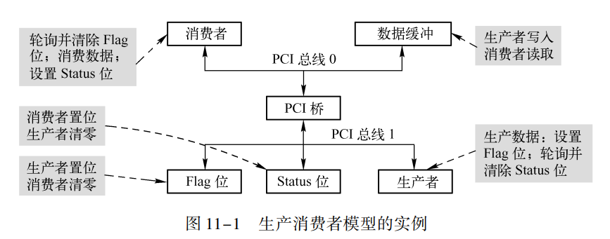
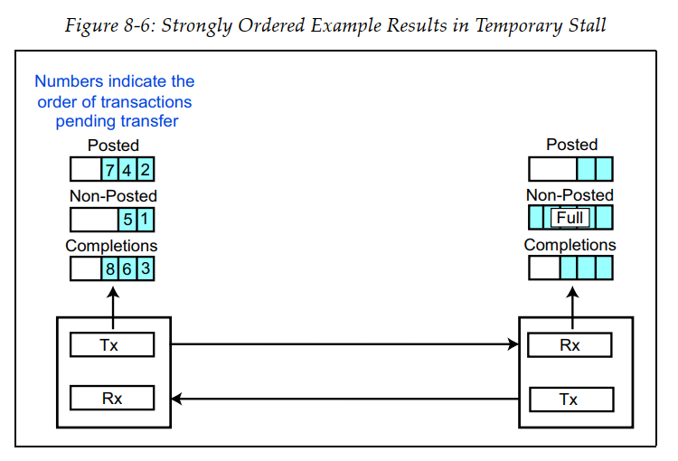
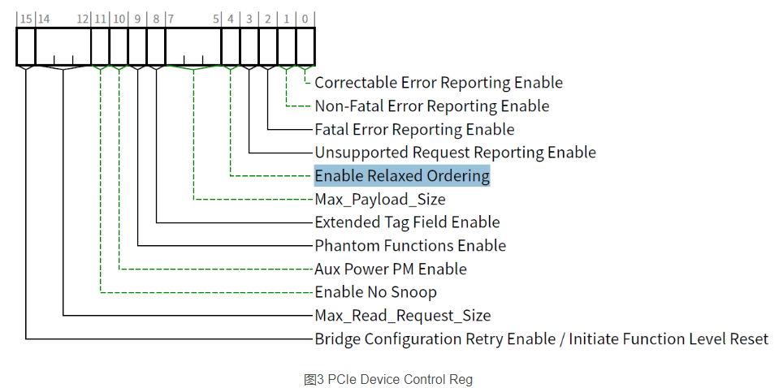
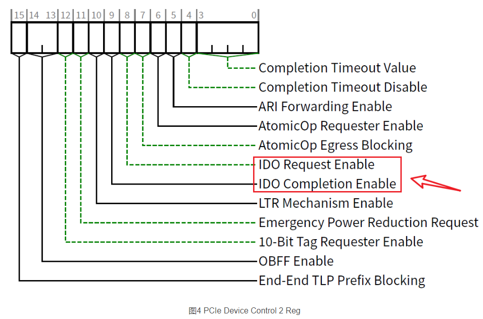

Transaction Ordering
[toc]
为什么需要排序
-
为了协调数据生产与消费端的速度不同，使用了生产者消费者模型；
-
在EP, SWITCH，RC中，发送与接收端处处都有buffer，会缓存TLP包，数据不会按照我们想要的结果立刻到达对应的位置；
-
由此带来了生产者消费者模型的bug，数据就会乱，甚至干死锁了，因此要对这个顺序有个合理的安排，让生产者消费者模型顺畅地运行起来。
具体来说，
那么同一个VC中，不同TLP包是否应该严格按照进入该VC的顺序，传送到对端。
应该注意，同一个VC中，TLP的TC可能不同，同一TC的流控类型也可能不同。
Transaction Ordering主要关注的就是拥有相同 TC（Traffic Class，流量类型）的事务，PCIe 规定了它们之间的排序规则。
针对上面这个问题，设定了一些排序规则。
这样做的好处有以下几点：
-
保持与传统总线的兼容性。比如PCI，PCI-X等；
-
保证事务的完成具有准确性，并且按照设计人员的意愿完成；
-
避免死锁的状况发生；
-
最大限度的优化PCIe总线的传输效率。
注释：死锁是指两个以上的设备在访问临界资源时，相互等待对方释放这些资源，而无法访问这些资源的情况。
生产者-消费者模型
生产/ 消费者模型是一种并发协作模型， PCI / PCIe 设备使用该模型进行数据传递。
在 PCI / PCIe 总线中， 访问 “序” 的安排必须保证生产/ 消费者模型的正确运转， 这也意味着在 PCI / PCIe 总线中， 数据的传送规则需要与生产/ 消费者模型一致 。
为什么用这个模型：因为生产者消费者数据处理能力不一致，为了达到数据生产和消耗的平衡。
模型组成：
- 共享数据缓冲；
- 生产者：
- 消费者；
- Flag位；生产者通过对该位写 1 通知消费者， 已经将数据写入缓冲中。 消费者通过该位判断数据缓冲是否有效， 为 1 表示在数据缓冲中的数据已经被生产者写入； 为 0 表示没有被写入。 该位由生产者写 1， 由消费者清零。
- Status位。消费者通过对该位写 1 通知生产者， 已经将数据从缓冲读出； 生产者通过该位判断数据缓冲是否有效， 为 1 表示在数据缓冲中的数据已经被消费者读出； 为 0 没有读出。 该位由消费者写 1， 由生产者清零。

工作流程

可能出现的问题：写数据到缓存和置位Flag，不是相同的路径做的，置位时候，数据可能没有完全写入到buffer中；同样status置位也会有潜在的风险。因此需要合理安排这个“序”。
PCI 总线中的应用
PCI 总线规定， PCI 设备必须按照生产/ 消费者模型提供的规则访问存储器或者 I / O 资源。

可能的问题：PCI 桥会缓存数据，数据并不会直接到flag或者status位。如，写数据时候，数据被缓存，还没到buffer中，然后写置位操作，置位直接成功了，但是数据还没完全到buffer。
由以上过程可以发现， 由于 PCI 桥的存在数据并不能立即到达目的地， 因此有可能造成总线死锁和数据不完整等一系列问题， 最终导致生产/ 消费者模型不能在 PCI 总线上正确运行。
死锁
情景1
PCI发送接收使用同一个buffer。AB设备同时申请PCI总线，给对方发写请求。A申请到了总线，向B写，B的buffer有数据要发，拒绝了A的写；B又获得了总线资源，向A写，A的buffer也有数据要发，拒绝了B的写，二者就死锁了。为了解决这个问题，收发单独弄一个buffer就好了。

情景2
数据传送序引发的死锁
A向B写数据，B去存储器中读数据。
PCI 设备 B 发现有发向自己的 Posted 写请求时， 并不接收这个请求， 而是使用重试周期拒绝这个写请求， 因为这个 PCI 设备希望从存储器读取完数据后， 才能接收这个写请求。
此时在 PCI 桥 A 中暂存的 Posted 写无法完成， 同时 PCI 设备 B 的读完成请求也无法穿越 PCI 桥 A， 此时将产生死锁。

PCI 总线的序
从上面那些例子可以看出，一些特殊情况下，生产者消费者模型可能会出bug。
因此PCI 总线订了一些规则，只要按照这些规定好的序去运行，无论生产者，消费者，buffer，flag，status怎么放，有没有缓冲bridge，都可以正常工作。
PCIe 总线的序
PCIe 总线的序基于 PCI 总线的序， 并进行了许多扩展。 在 PCI 总线上， 仅能使用强序传送规则， 而 PCIe 总线支持 Relaxed ordering 方式进行数据传递， 使用这种方法时， 不同的TLP 在通过 RC 和 Switch 到达 EP 时， 不一定遵循 PCI 总线的强序原则， 这也意味着先发出去的 TLP 并不一定能够最先到达目的地。 PCIe 总线使用 Relaxed ordering 数据传送方式， 在一定程度上可以提高数据传送效率。
在 TLP 的 Attr 字段中有一个 Relaxed Ordering 位， 表示该 TLP 是否支持 PCIe 总线的 Relaxed Ordering 方式， 但是 TLP 是否可以使用 Relaxed Ordering 还与这个 TLP 经过的设备有关。 如果一个 TLP 经过的 Switch 不支持 PCIe 的 Relaxed Ordering 数据传送方式， 通过这个Switch 的 TLP 报文依然需要使用强序方式通过这个 Switch。
系统软件可以通过使能 Device Control 寄存器中的 Enable Relaxed ordering 位， 来禁止或者使能 TLP 报文的 Relaxed ordering 功能， Device Control 寄存器在 PCIe 设备的 PCI Express Capability 结构中。
PCIe 总线的 Relaxed Ordering 数据传送方式是有条件的， PCIe 总线的每一个 TLP 报文都有一个唯一的 TC， 而这个 TC 又和一个唯一的 VC 对应 。 Relaxed Ordering 与报文使用的 VC 相关。 VC 相同的 TLP 间的传送遵循 Relaxed Ordering 的原则， 而 VC 不同的 TLP 间没有序的要求。 在 PCIe 总线中， 所有数据传送类型， 如存储器、 I / O、 配置和 Message 总线事务都需要遵循规定的传送顺序。
基本规则
PCIe事务以生产者-消费者模型为基础，具有以下基本排序规则:
- 相同TC的事务遵循强排序规则；
- 不同TC的事务不存在排序关系；由于相同TC不能映射到不同VC，所以不同VC的事务也不存在排序关系；
- 所有事务（Mem/IO/Cfg/Msg）遵循相同的排序规则；
- 特定情况下开启了宽松排序的事务可以排在其他相同TC事务之前发送。
若PICe生产者-消费者相关事务的TC值相同且未开启宽松排序，则PCIe基本排序规则支持生产者-消费者模型。
常用方法
强排序(Strong Ordering)
严格按照规定的顺序来。
接收端Non-Posted buffer已满，TLP 1,5则需要暂停发送。
由于这8个TLPs属于同一VC，需要按照Strong-Ordering规则排序。所以TLP 2,3,4对应接收端VC buffer即使有可用空间，也必须等TLP 1传输完成之后才能发送。

宽松排序(Relaxed Ordering)
PCIe支持的Relaxed Ordering的传递规则不会要求TLPs严格遵守先来后到，也意味着根据轻重缓急找到最佳的方案，提高数据的传输效率。

基于ID的事务排序（ID Based Ordering, IDO）
IDO的模型是在PCIe V2.1版本之后新增的功能。该模型引入了"数据流"（Stream）的概念，即：相同数据源发送的TLPs属于同一数据流；不同数据源发送的TLPs属于不同的数据流。
IDO模型允许不同数据流的TLPs之间不必遵循事务排序的约定。
个人理解：因为不同数据流之间，大概率不会有互相依赖或干扰。所以可以乱序执行。

参考：
- PCI Express体系结构导读 (王齐)